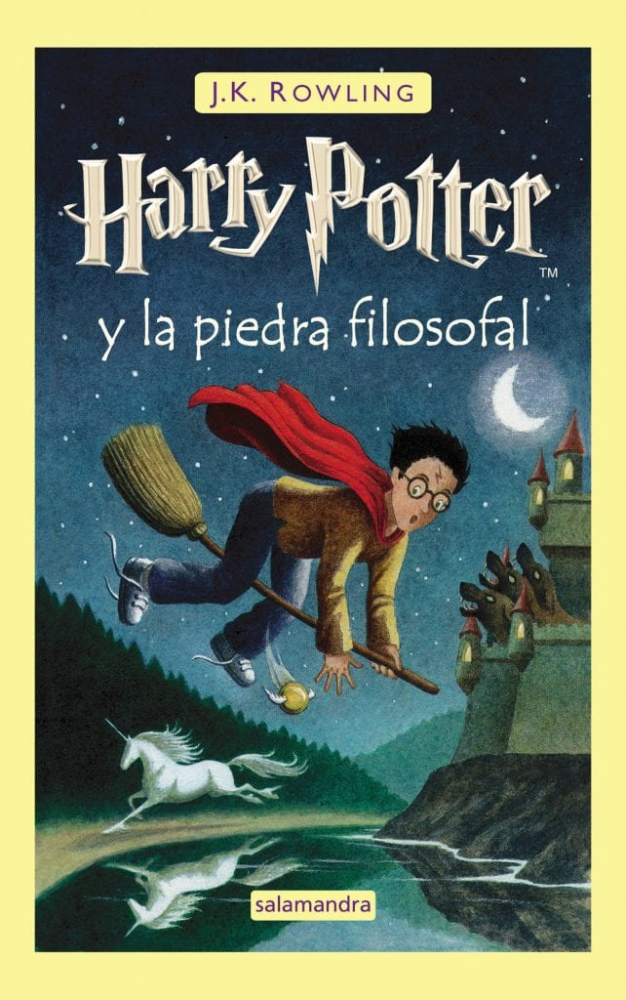
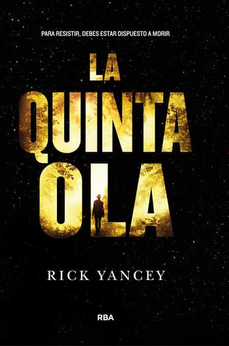

Librería pública
Bienvenido
En este sitio podrás encontrar una pequeña (pero en expanción) muestra de
libros abierta al publico.
Fantasía

Ciencia Ficción

 Romance
Romance
Gracias por visitar la página, subiremos nuevos libros cada mes.
Nota: se busca donantes de libros de cocina y/o manualidades.